Širok portfelj za komercijalno čišćenje i dinamične uslužne prostore.
Globalna tehnologija. Lokalna implementacija.
Autonomni roboti za profesionalno čišćenje.
Od odabira i demonstracije do mapiranja, edukacije i servisa. Adria Robotics uvodi provjerena rješenja PUDU, OrionStar i Gausium u objekte diljem Adria regije.
- 3
- portfelja robota
- 5
- koraka implementacije
- 1
- lokalni partner
Neovisna preporuka
Više portfelja, jedan odgovoran rollout.
Kupac ne mora pogađati model. Analiziramo prostor, zadatak i budžet pa shortlist gradimo prema stvarnim uvjetima rada.
Kompaktni autonomni sustavi za objekte s prometom, rubovima i preprekama.
Specijalizirani roboti za velike površine, skladišta, retail i industriju.
Brza kvalifikacija
Koji robot ima smisla za vaš objekt?
Unesite osnovne parametre. Preporuka je orijentacijska; konačan odabir radimo nakon pregleda prostora i demonstracije.
Istaknuti modeli
Roboti prema zadatku, prostoru i režimu rada.
Kartice prikazuju tipičan fit. Točne specifikacije, oprema i infrastruktura potvrđuju se prije ponude.
PUDU Robotics
CC1 Pro
Always-on 4-u-1 autonomno čišćenje za velike komercijalne prostore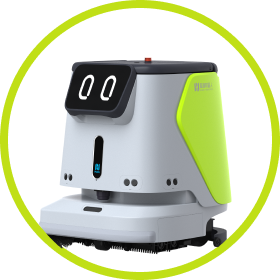
PUDU Robotics
CC1
4-u-1 čišćenje za urede, retail, obrazovanje, hotele i javni transport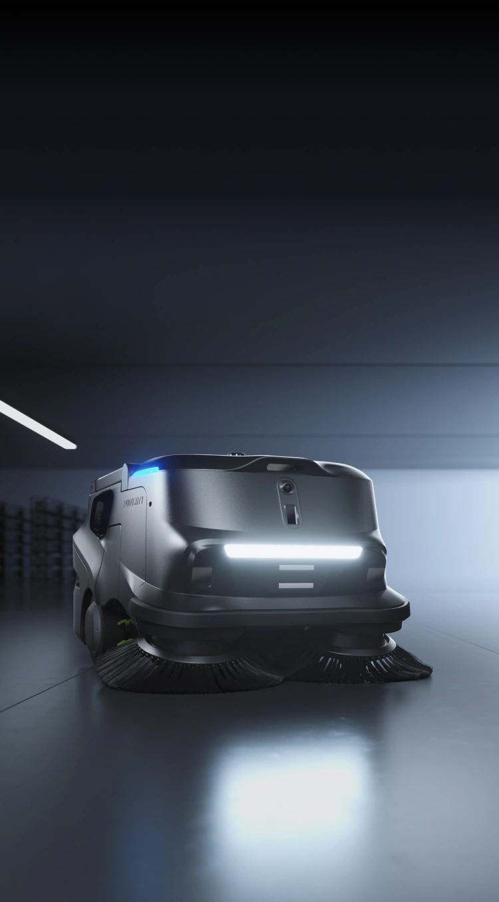
PUDU Robotics
MT1
AI robotski sweeper za velike prostore, prašinu i rasuti otpad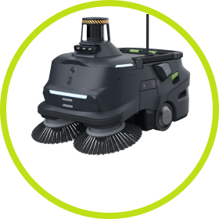
PUDU Robotics
MT1 Max
3D percepcija i snažnije autonomno pometanje za zahtjevne velike zone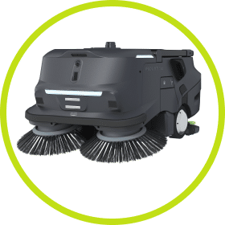
PUDU Robotics
MT1 Vac
Robotsko suho čišćenje, usisavanje i dust mopping za mješovite podove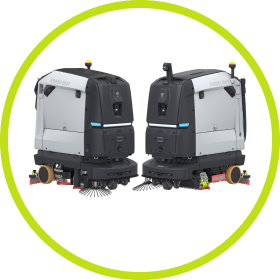
PUDU Robotics
BG1 Series
Veliki scrubber-dryer sustav za jedno-prolazno metenje i pranje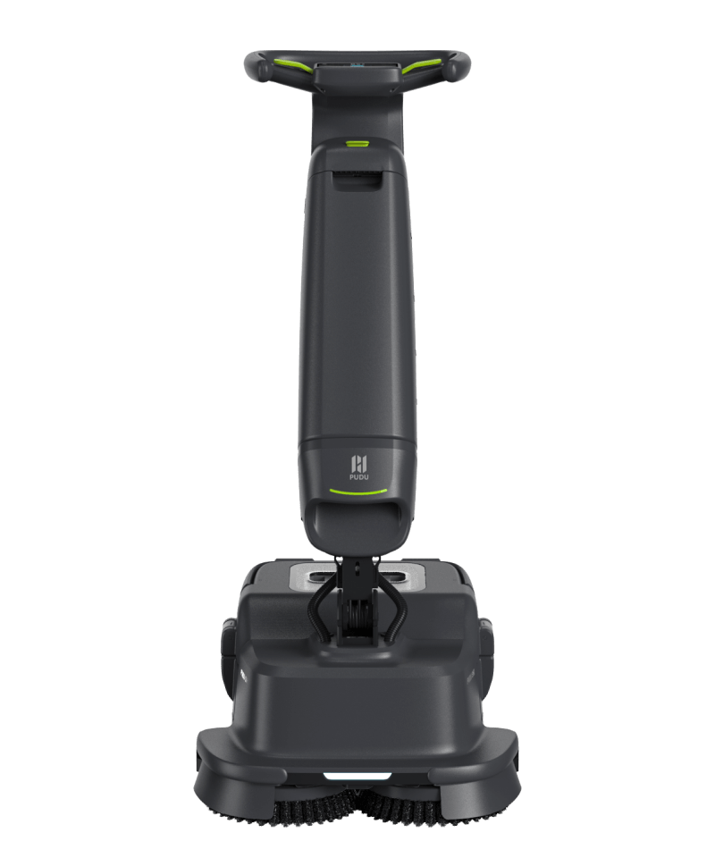
PUDU Robotics
SH1
Upright scrubber dryer za brzu reakciju u retailu, hotelima i ugostiteljstvu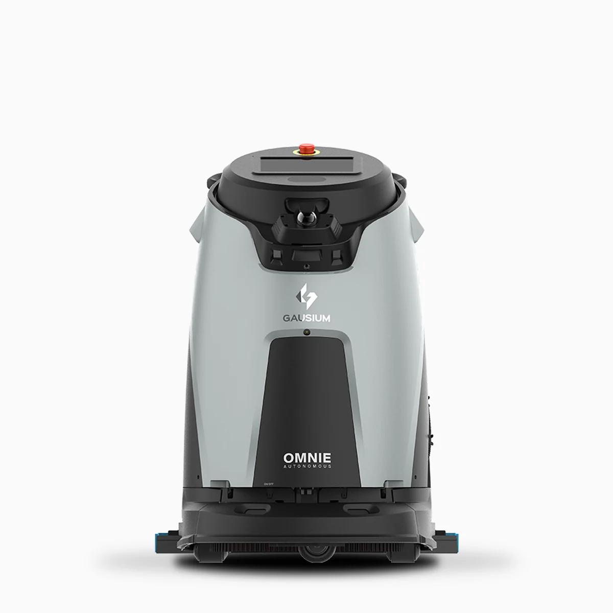
Gausium
Gausium Omnie
Velike javne i komercijalne površine sa stabilnim autonomnim rutinama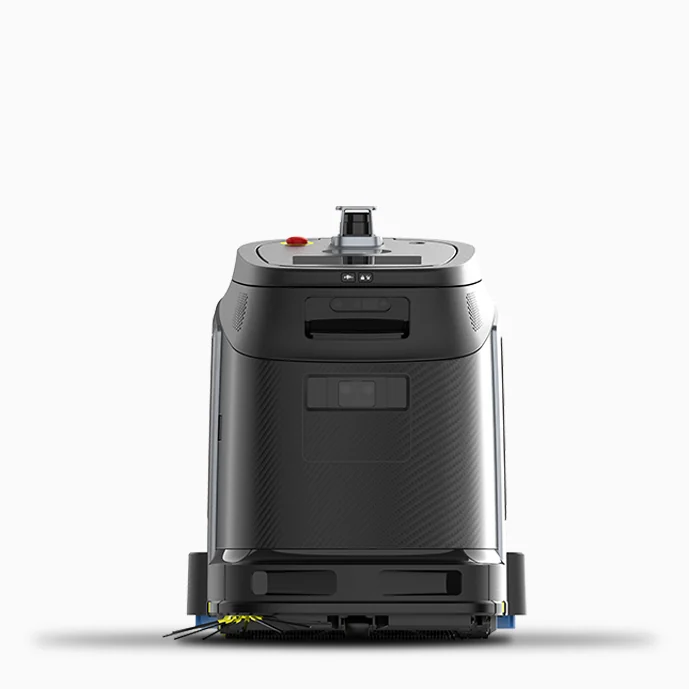
Gausium
Gausium Phantas
Kompaktni prostori, uski prolazi i svakodnevne rute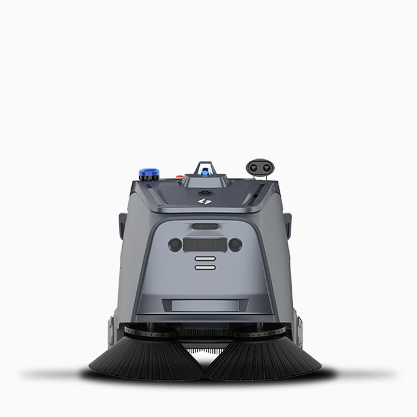
Gausium
Gausium Beetle
Skladišta, proizvodnja i suho pometanje većih zona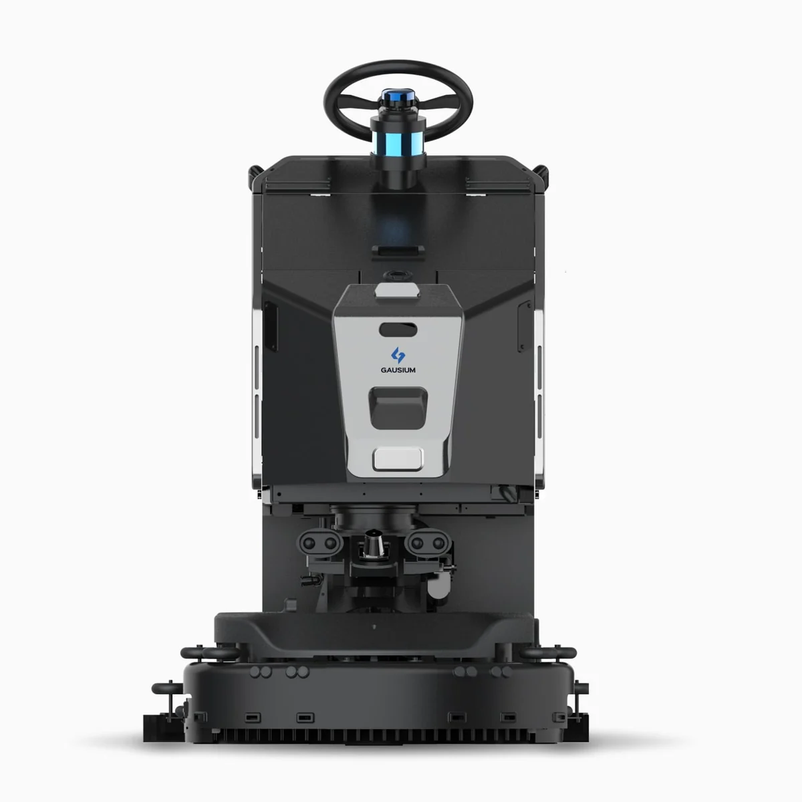
Gausium
Gausium Scrubber 75
Robusno mokro čišćenje tvrdih površina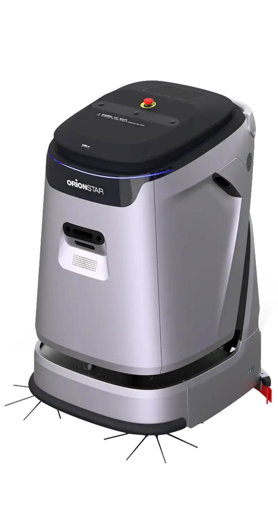
OrionStar
OrionStar CleaniBot C5
Hodnici, uredi, upravljani objekti i rubno čišćenjePrimjene
Autonomija se planira prema prostoru.
Drugačiji objekt znači drugačiju navigaciju, režim čišćenja, sigurnosne zone i logistiku punjenja.

Skladišta i logistika
Velike zone, prašina, regali, rampe i stalno kretanje opreme.
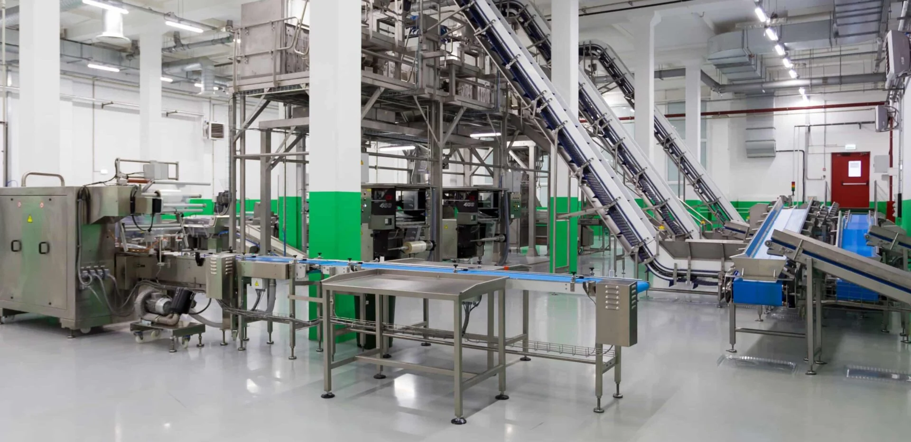
Proizvodnja
Planirane rute oko strojeva, sigurnosne zone i rad izvan smjena.
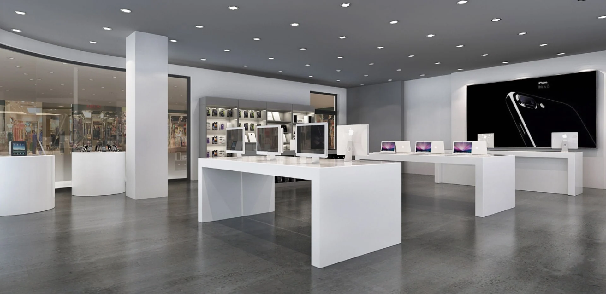
Retail
Vidljivo čisti prostori uz promet kupaca i promjenjive prepreke.
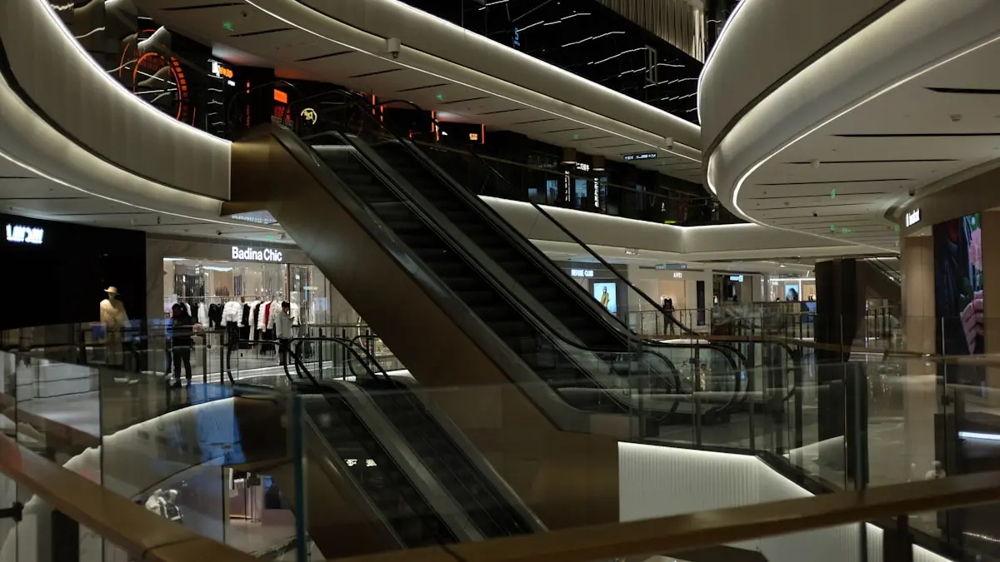
Shopping centri
Široki koridori, noćne rutine i više zona s različitim prioritetom.
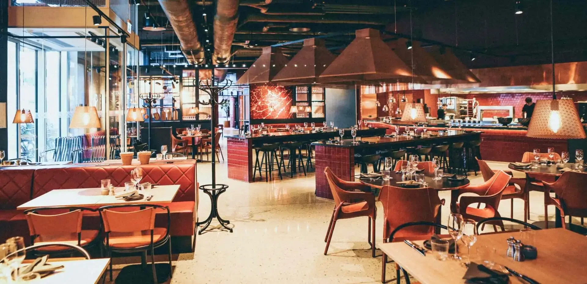
Hoteli i ugostiteljstvo
Tiši režimi, brza reakcija i čistoća u prostoru koji gosti vide.
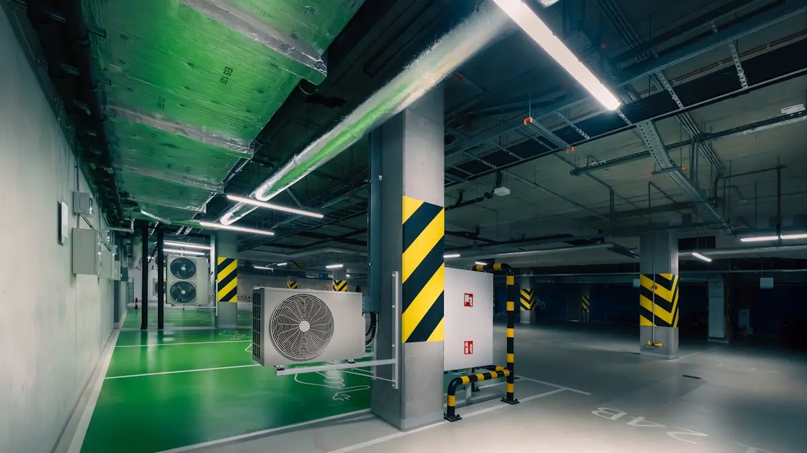
Parkirališta
Grublja prljavština, šire rute i potreba za pouzdanim pometanjem.
Kako surađujemo
Od procjene do robota koji radi u vašem objektu.
Proces je postavljen da smanji rizik prije kupnje i skrati put do stabilnog rada.
-
01
Analiza prostora
Površine, podovi, promet, prepreke, voda, odvod i režim čišćenja.
-
02
Preporuka modela
Usporedba realnih opcija iz PUDU, OrionStar i Gausium portfelja.
-
03
Demo na lokaciji
Provjera ponašanja robota u stvarnom prometu i na stvarnim podovima.
-
04
Mapiranje i puštanje u rad
Rute, zone, rasporedi, sigurnosne postavke i predaja operaterima.
-
05
Edukacija i servis
Trening korisnika, preventivno održavanje, dijelovi i eskalacija podrške.
Dokaz u praksi
Pogledajte kako autonomno čišćenje izgleda u stvarnom rollout-u.
Video demonstracije koristimo kao početni razgovor, ali konačnu odluku donosimo na vašem objektu: s vašim podovima, rutama i uvjetima rada.
Rezervirajte demonstraciju
Demo i procjena
Pošaljite osnovne podatke o objektu.
Vratit ćemo se s prijedlogom sljedećeg koraka: kratak poziv, pregled lokacije ili demonstracija robota.
- Preporuka modela prema prostoru i zadatku
- Procjena broja robota i režima čišćenja
- Plan implementacije, edukacije i servisa